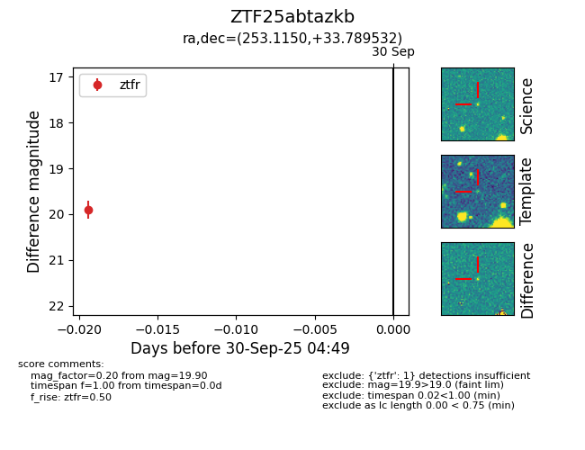

FINK: ZTF25abtazkb
Lasair: ZTF25abtazkb
ALeRCE: ZTF25abtazkb
ZTF25abtazkb (ztf,fink)
equatorial (ra, dec) = (253.1150,+33.78953)
galactic (l, b) = (55.9756,+38.35711)

last ztfr=19.90
1 ztfr detections